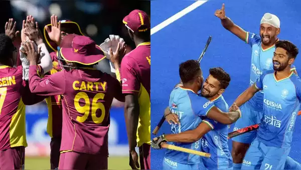
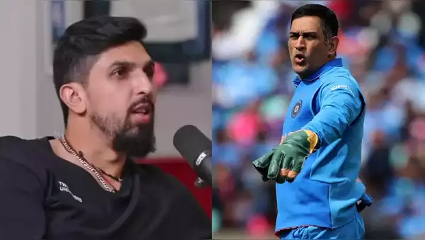
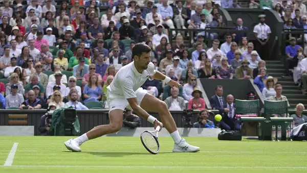
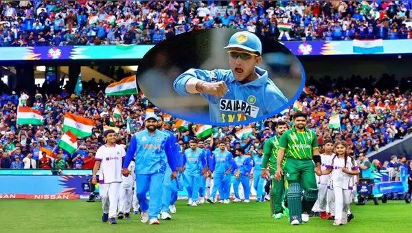

The West Indies have failed to qualify for the 2023 World Cup in India. This is the first time that the two-time champions will not be part of the biggest cricket event in history. Here is a look at four instances when teams that once dominated sports failed to qualify for a big event:

Senior Indian pacer Ishant Sharma, who played many matches under MS Dhoni's leadership during his playing career, has made a shocking revelation about the calm and cool Dhoni and said that the former Indian captain isn't calm like people believe he is. According to him, the former Indian captain used to abuse a lot on the field.

The Serbian second seed was broken in the third game when he double-faulted but hit back immediately to level at 2-2. Djokovic, chasing a record-equalling eighth Wimbledon men's singles title, broke again in the eighth game before serving out for the set.

Former India captain Sourav Ganguly reminded everyone of India's dominance over the past decade against arch-rivals Pakistan while stating that there is a lot of hype in the match but the quality of cricket has not lived up to its expectations with India almost making it a one-sided contest, adding that the only time Pakistan rose to the occasion was in the T20 World Cup in Dubai in 2021.